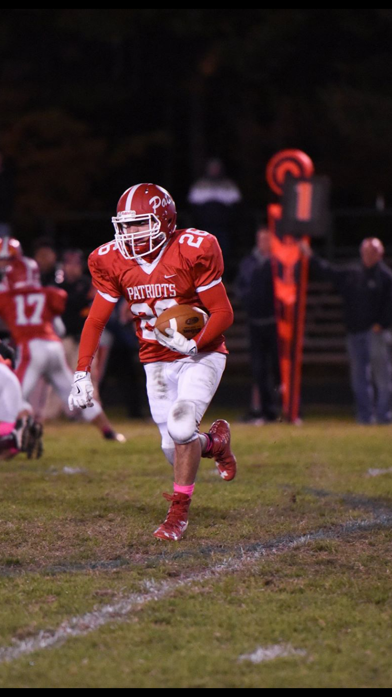
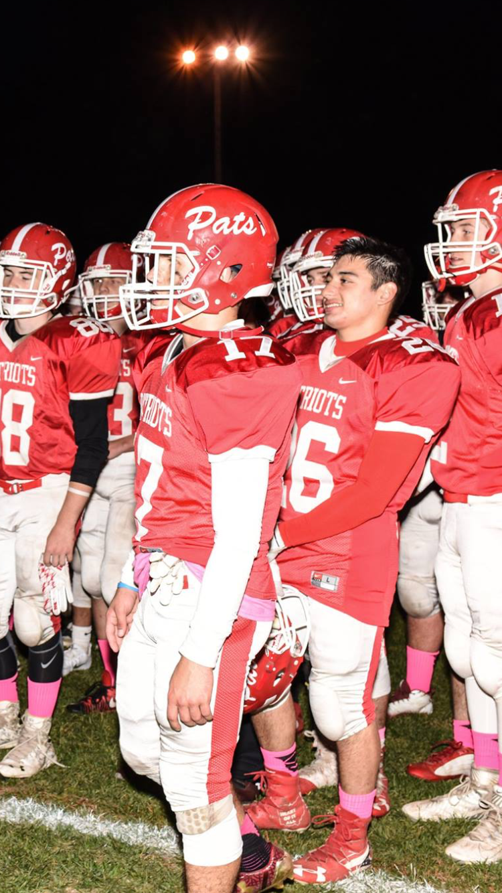
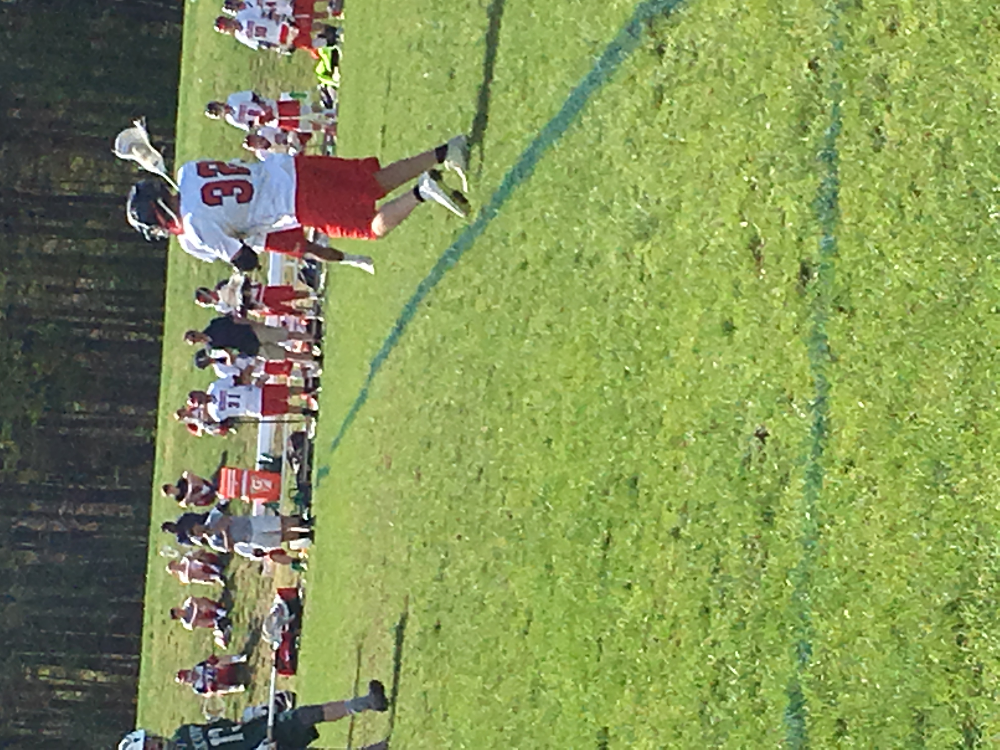
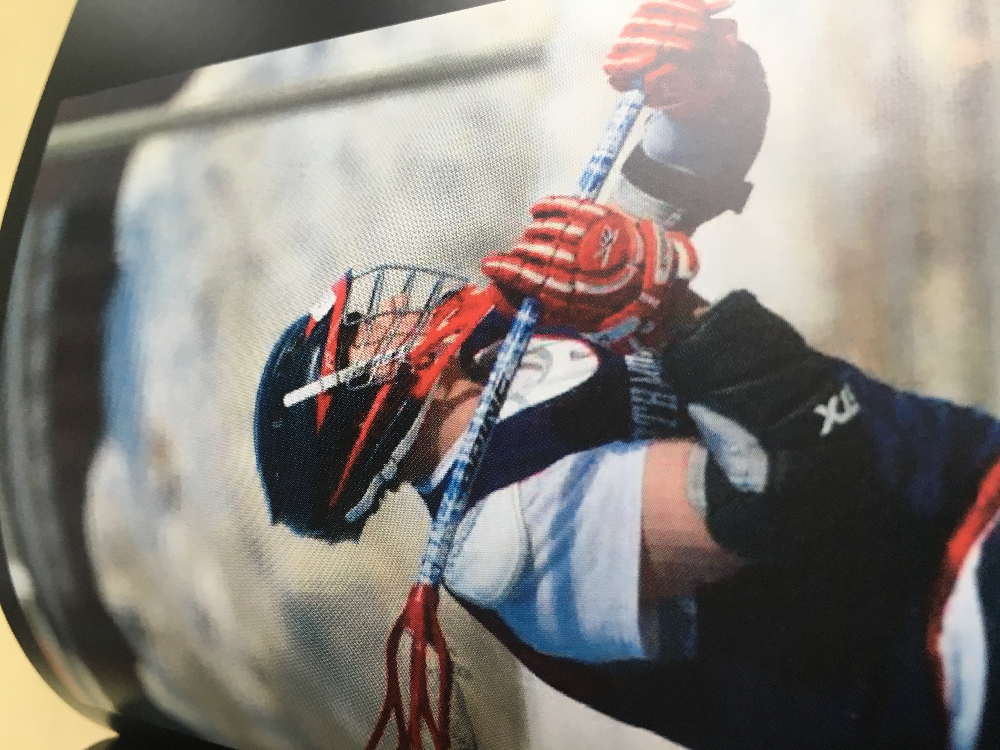

Sports Pictures
At my highschool I was involved in a number of activities through my four years. The big ones I was most interested in was football and lacrosse. I played four years of each in highschool. I continued this here at Umaine by playing in the flagfootball league. I also played two years of basketball but I wasn't too committed to it and eventually just dropped it.




Homepage